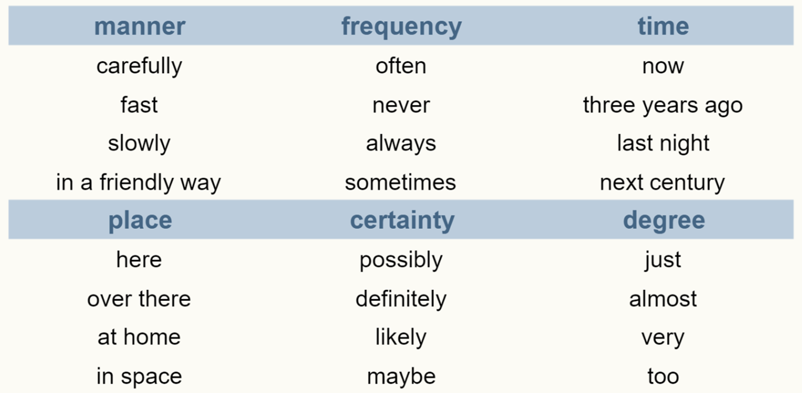
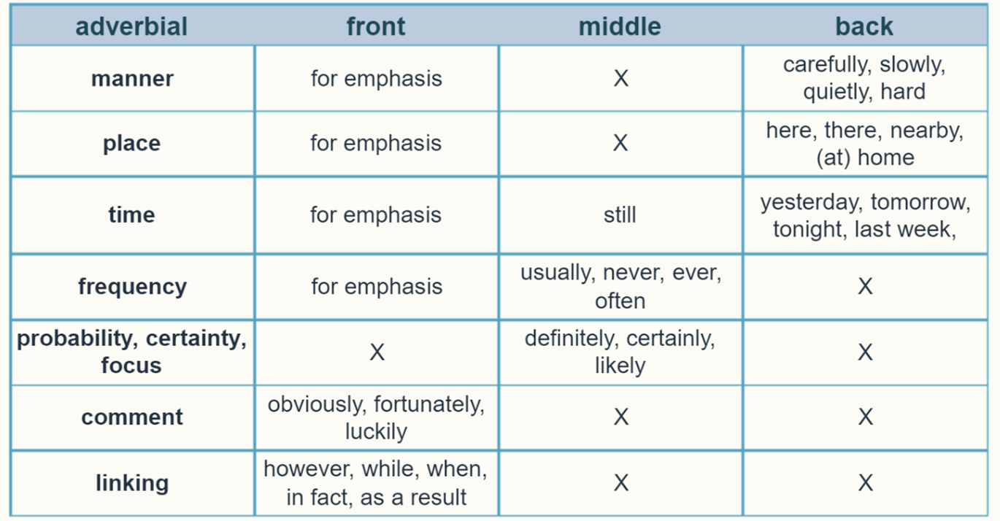

In this lesson, we’ll look at adverbs and adverbials.
Adverbs often modify verbs.
This means that they describe the way an action is happening.
Example:
She can count quickly.
Quickly is the adverb in the sentence.
Adverbial
An adverbial is a word or phrase functioning like an adverb.

|
Take note of the position of adverbials. Adverbials of manner, time, and some of frequency usually at the end of the clause. Example: |
|
Adverbials of certainty, some adverbs of frequency, and time usually go in the middle. Example: |
Here’s more guidelines regarding the positions of the adverbials:
